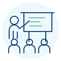

Ontwerp & Ontwikkeling
Van ontwikkelvraag naar samenhangende opleidingen, cursussen, lessen, leerlijnen, toetsing en digitale leermiddelen.
Bekijk Ontwerp & OntwikkelingUnion ontwerpt en ontwikkelt praktijkgerichte leertrajecten en verzorgt trainingen voor medewerkers binnen organisaties. Zo verbinden we ontwikkeling aan professioneel handelen. Samen bepalen we wat medewerkers in hun werk nog beter moeten kunnen en welke aanpak daarbij past.
Samen bouwen we aan de ontwikkeling van jouw medewerkers, met leertrajecten en trainingen die passen bij jullie dagelijkse praktijk.
Van ontwikkelvraag naar samenhangende opleidingen, cursussen, lessen, leerlijnen, toetsing en digitale leermiddelen.
Bekijk Ontwerp & Ontwikkeling
Praktijkgerichte trainingen waarin deelnemers actief oefenen, feedback ontvangen en vaardigheden verbinden aan herkenbare werksituaties.
Bekijk de trainingen
Een training afgestemd op doelgroep, werkcontext, gewenste toepassing en de leerbehoefte.
Bekijk maatwerktrainingWe verhelderen de ontwikkelvraag, bepalen concrete leerdoelen en verbinden leren aan de toepassing in het werk.


De elektronische leeromgeving (ELO) ondersteunt de voorbereiding, de uitvoering en de afronding van de training. Daarna blijven bronnen, modellen en andere ondersteunende middelen één jaar beschikbaar voor gebruik in het werk.

Toegang tot de ELO, inhoudelijke voorbereiding en een ontwikkelgerichte nulmeting.
Digitale leermiddelen ondersteunen uitleg, actief oefenen, feedback en reflectie.

Eindmeting, reflectie en input voor evaluatie met de opdrachtgever.

Bronnen, modellen en andere ondersteunende middelen blijven beschikbaar als ondersteuning in het werk.
We verkennen de vraag, leerbehoefte en werkcontext en bepalen van daaruit welke leeroplossing passend is.